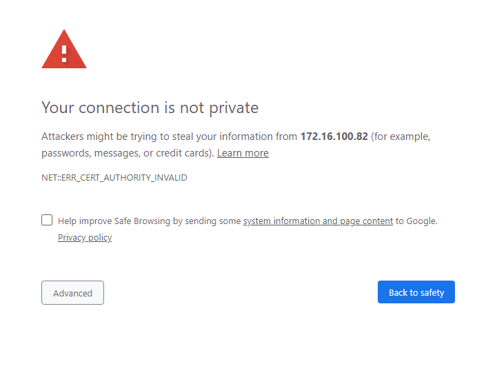
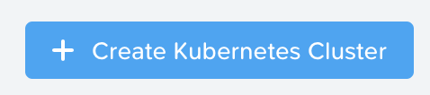
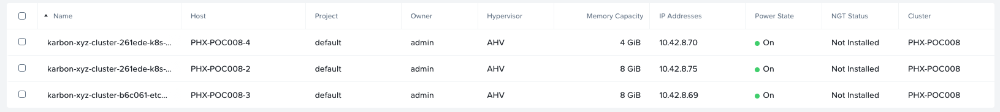
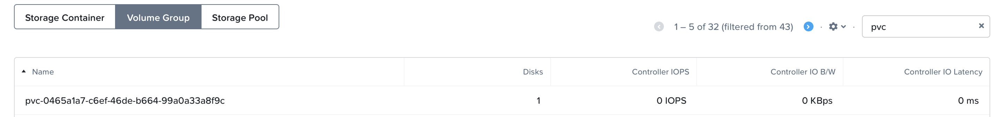
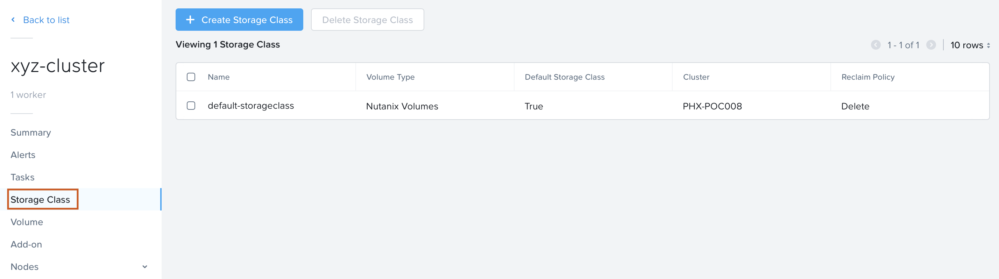

-
Setting up Developer PC and accessing Git
Installing Jenkins and Setting up a Pipeline
Before we can deploy an application using kubernetes we need to create a Kubernetes cluster first. The cluster that we are ging to create consists out of the following VMs:
Note
For more information on the terms master, worker and etcd, please look at https://kubernetes.io/docs/concepts/.
In your PRISM Central, select the three dash in the top left corner and select Service -> Karbon.

A new browser window will open and accept the HTTPS error you will see.
In the shown browser screen click on the + Create Cluster button for starting to create the kubernetes cluster.
Provide the required parameters that are asked for in the wizard. The following screenshots can be used as a guideline.
Note
Where there needs to be more information to explain the settings, it will be provided in notes. You can also hover over the ? sign to get more information.
Choose Development Cluster

Enter a name for your cluster initials-cluster and choose your HPOC as Nutanix Cluster

Provide the Worker, Master and etcd settings as default; click Next

Provide the Network Provider settings as default; click Next
Note
We use flannel as the network provider. More information on Flannel can be found here: https://github.com/coreos/flannel#flannel

Provide the Storage class settings. For the cluster settings use admin and the cluster password that you used to login to the cluster.

Click on the Create button to have the cluster created by the system. Follow the process in the Karbon UI.
Note
Based on the resources available on your cluster, it will take time. Wait until the cluster has been created before proceeding to the next part of the module!!

During the creation of the Kubernetes cluster there will have been created:
VMs
Persistent Storage as VolumeGroup
In the Karbon UI, hover over the just created cluster (initials-cluster in our example) and click on it.

This will open another screen which shows the parts out of which the cluster is created according to the provided parameters that have been provided during the creation phase.

The below screenshots provide an example for the three parts, Storage Class, Volume and Add-on.
Note
This concludes the end of this part of the module. You now have a running Kubernetes Cluster called Wordpress.